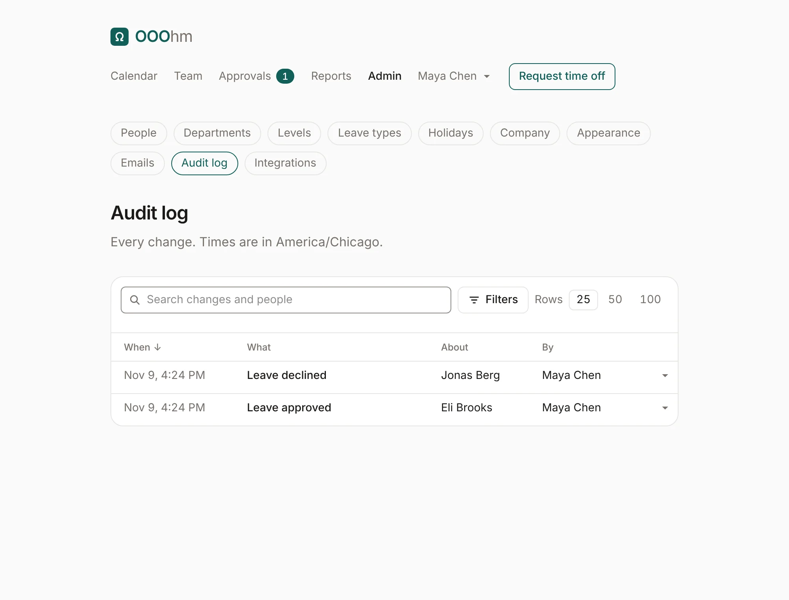
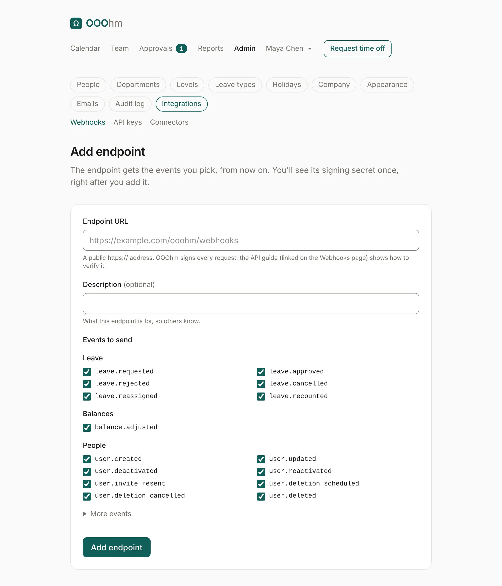
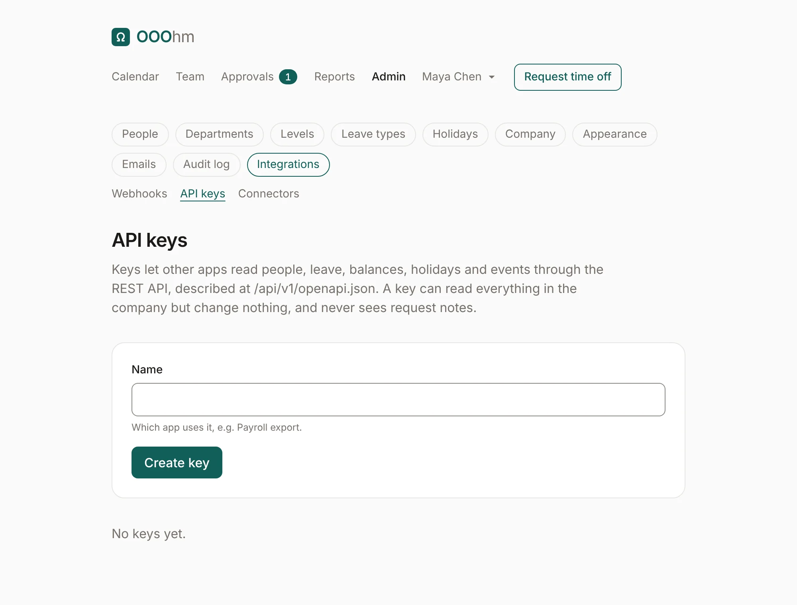
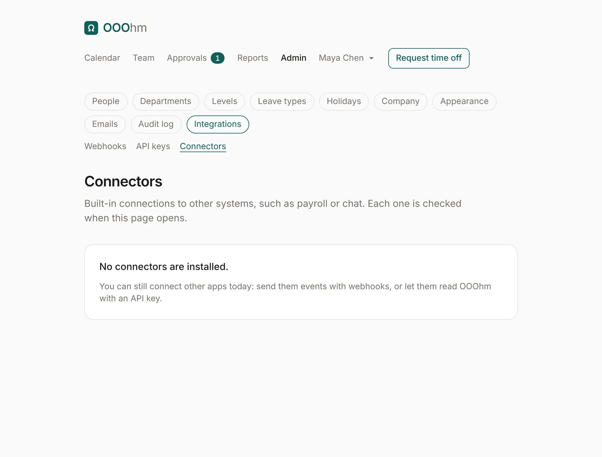

Audit log and integrations
Audit log
Admin → Audit log records every change: every request and decision, every balance change, and every admin change, each naming who or what made it (a person, a person through a sync or an import, an API key, or a system process like the yearly rollover). Nothing is anonymous. Times are in the company's time zone.

Search changes and people from the box at the top. Filters narrows the log by What happened, Done by, About whom, and a From and To date; Rows sets how many show per page. Click When to flip between newest and oldest first, a person or an action in a row to see only those changes, and the arrow at the end of a row to see the fields that changed.
Integrations
Admin → Integrations has three tabs: Webhooks, API keys and Connectors. The API reference has every endpoint, event and payload.
Webhooks
When something changes, OOOhm sends a signed POST to each endpoint that wants that event, and retries for about two days if the endpoint is down. Add endpoint asks for:
| Field | What it does |
|---|---|
| Endpoint URL | A public https:// address. |
| Description | What this endpoint is for, so others know. |
| Events to send | Leave, Balances and People are ticked by default. More events adds company setup, calendar links, integrations and imports. |

An endpoint's page has Send test event, its recent deliveries and their status, its Signing secret (with Get a new secret, which stops the old one at once), and Delete.
API keys
Keys let other apps read people, leave, balances, holidays and events through the REST API. A key can read everything in the company but change nothing, and never sees request notes. Give it a Name (which app uses it, like Payroll export). The key is shown once: copy it into the app then, since OOOhm stores only a hash. Send it as Authorization: Bearer <key>. Revoke stops it at once.

Connectors
Built-in connections to other systems, such as payroll or chat. None ship yet; until then, use webhooks and API keys.
